Claude는 Antropic이라는 회사에서 계발하는 자신의 인공지능 LLM model + agentic AI 기능을 합친 Application이다.
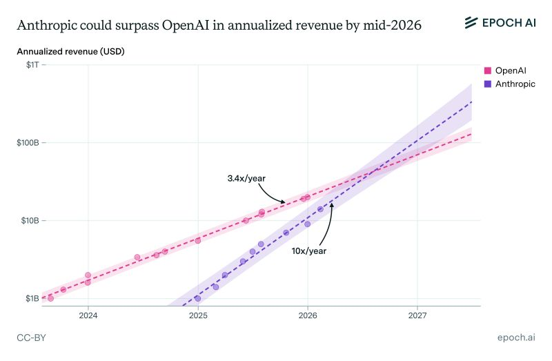
이번시간에는 클로드에 대해서 일단 빅 픽쳐로 어떤 것들이 어떤 기능을 하는지 빠르게 확인하는 시간을 가지자.
클로드는 사용자의 목적에 따라서, 3가지 application/platform을 지원한다.
- Claude ai - Chatgpt와 같은 web 대화형 application
- Claude Code - 코딩 작성을 위한 application
- Claude Cowork - 비계발자들의 컴퓨터 업무 생산성을 위한 application
https://claude.ai/new
google에 클로드를 검색해서, 들어가고 로그인을 진행하면 딱 이렇게 창이 뜨게 된다. 즉 Chatgpt와 정확히 동일한 기능을 가지고 있다는 것.
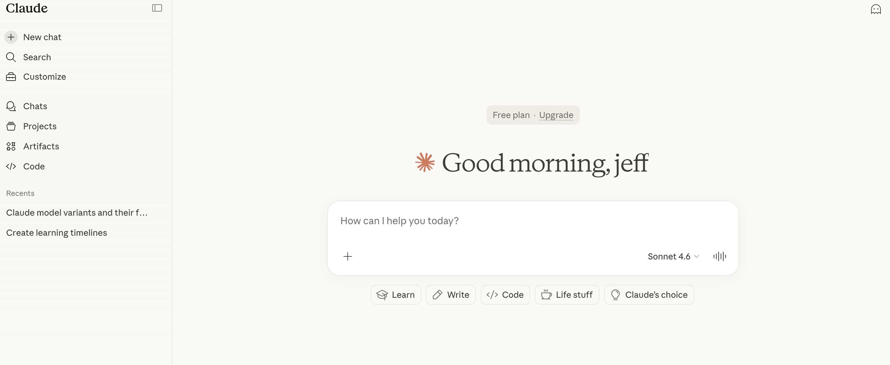
Claude Code는 유료 정기결제 회원들만 사용할 수 있다. (무료 플랜 사용 불가능)
Claude code를 사용하는 방법은 이렇게 3가지 Terminal, IDE, Web이 존재한다. 모두 똑같은 기능들을 제공하고, 보통 코드를 어디서 내가 작업을 하느냐에 따라서 이용공간이 달라진다.
(CLI - backend, IDE - frontend, Web - for all)
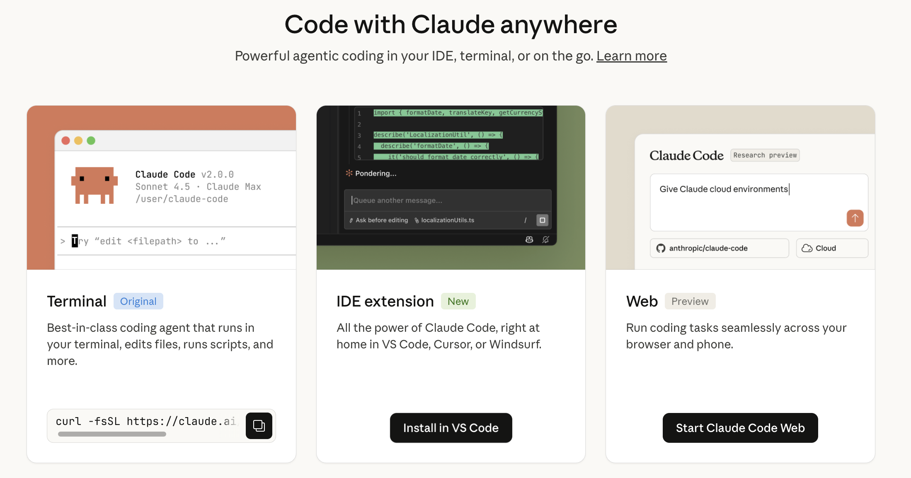
가장 최근에 출시되었고, 계속해서 업데이트가 빠르게 되고 있는 기능이다. target은 코딩업무가 아닌 다른 컴퓨터 관련 업무 (회계, 구매 … ) 등등 작업들을 하는 회사를 상대로 출시한 application이다.
이 기능을 사용하려면 유료 플랜이어야 하며, Desktop에 설치를 진행해야한다.(Window, MacOs 둘다 지원)
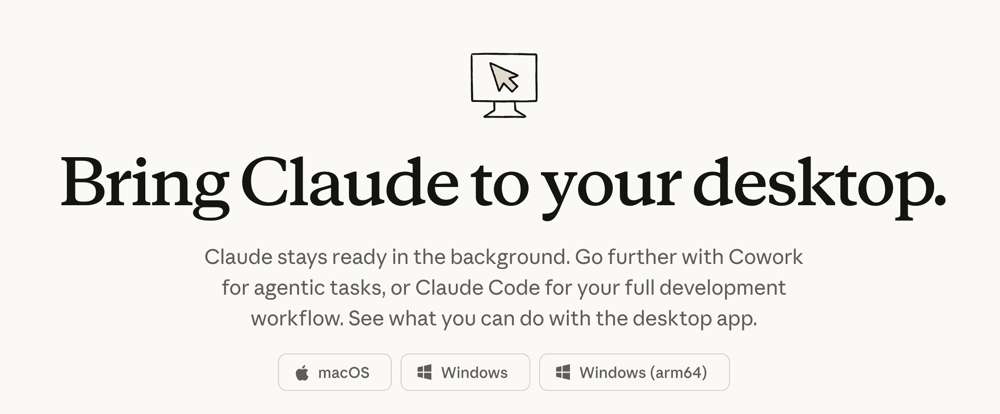
이렇게 Desktop mode에 들어오면 위에 Chat/Cowork/Code가 생기는 것을 확인할 수 있다.
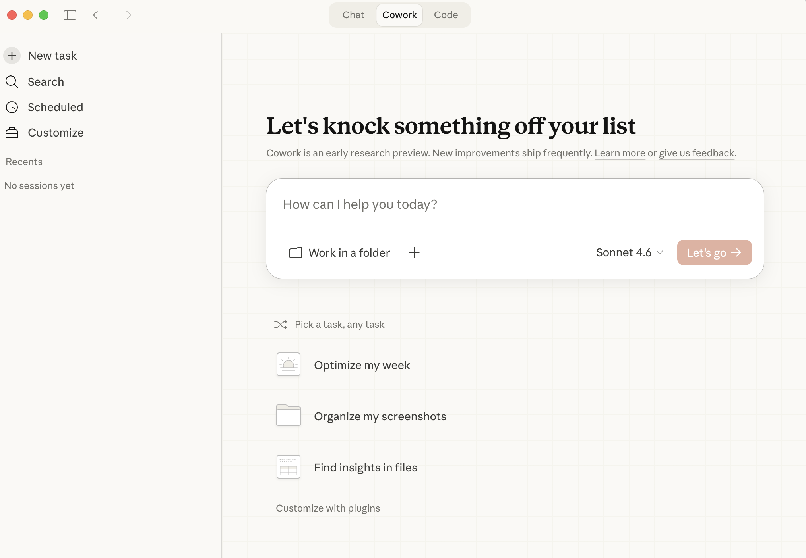
3가지 어플리케이션을 살펴보았고, 결국 목적에 따라 작업 공간이 달라진다. 여기서 Web은 Chatgpt와 정확히 동일하기 때문에 넘어가도로 하겠습니다.
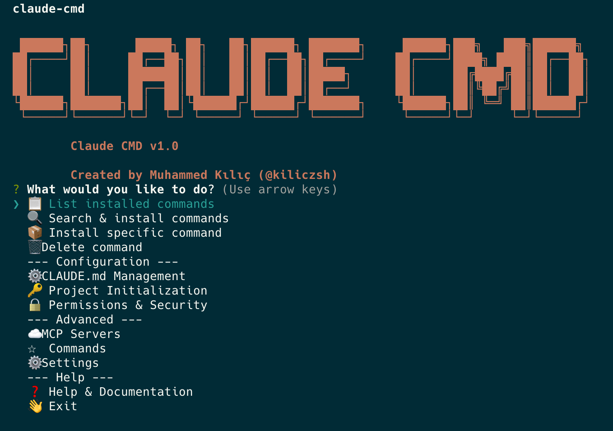
설치 방법은: https://code.claude.com/docs/en/setup
저는 맥북을 활용하여, terminal에서 아래의 command를 실행하였고, 설치가 그냥 끝났습니다.
curl -fsSL https://claude.ai/install.sh | bash
그다음에 terminal에서
claude
만 작성을 하면, 이렇게 대화창이 열리게 되고 여기서 작업을 진행할 수가 있다.
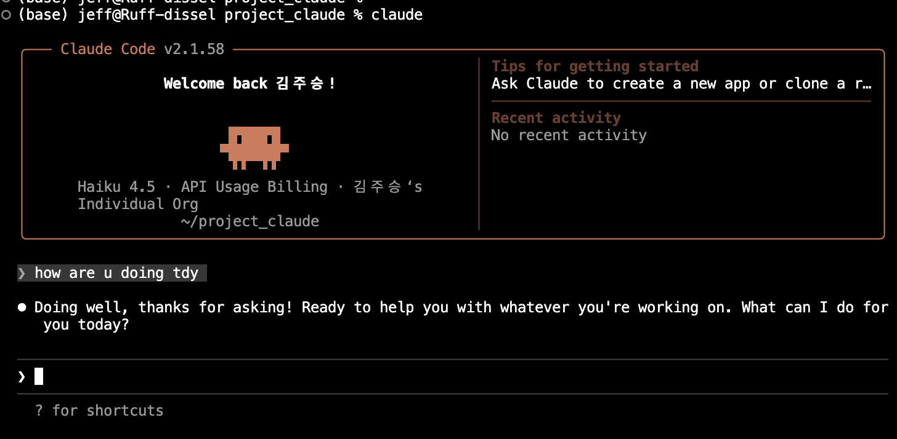
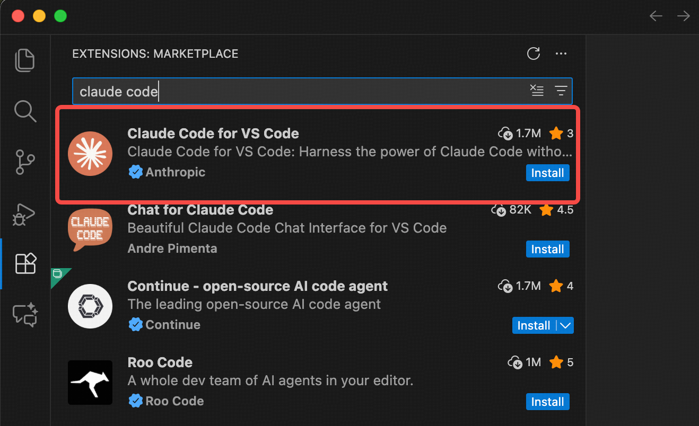
이후에 Extension - Claude를 좌측 sidebar에서 선택을 하면 이렇게 대화창이 보이게 된다.
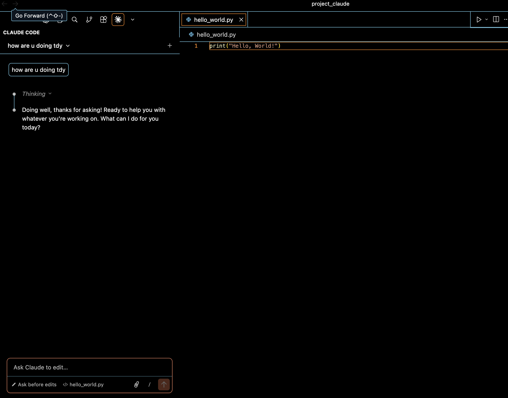
Desktop 모드는 chat/ cowork / code전부 지원한다.
여기서 이 모드의 가장 큰 핵심은 개발자가 아닌 사람들이 아주 쉽게 모든 기능을 ‘시각적’으로 이용할 수 있다는 점이다.
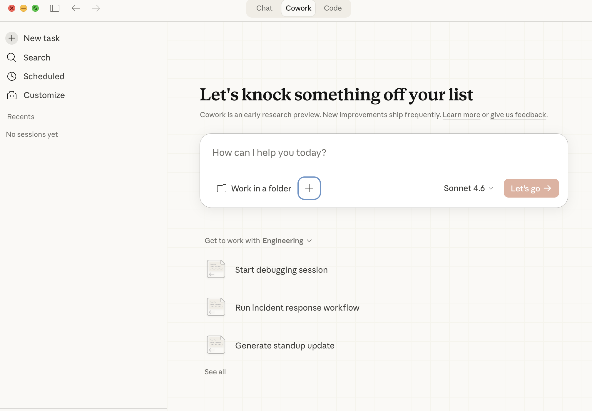
일단 추후에 자세하게 설명을 드리겠지만, 우리가 이론에서 보았던 Agentic AI - (Tools, Plug-in)을 Desktop mode에서는 Connector라고 칭한다. 우리가 어떤 도구를 가지고 있고 사용이 가능한지를 그냥 시각적으로 바로 아래처럼 체크가 가능하다.
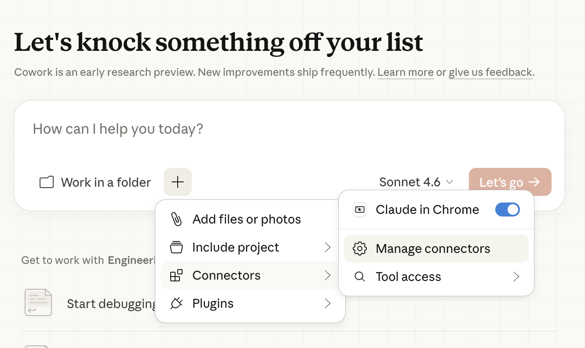
기존에 IDE, CLI를 사용했을때는 MCP.json파일을 생성하고, 거기다가 npm 명령어를 기입하고, 등등 꽤 복잡한 방식이었다면, Desktop mode는 그냥 + 버튼만 누르면 연결된다.
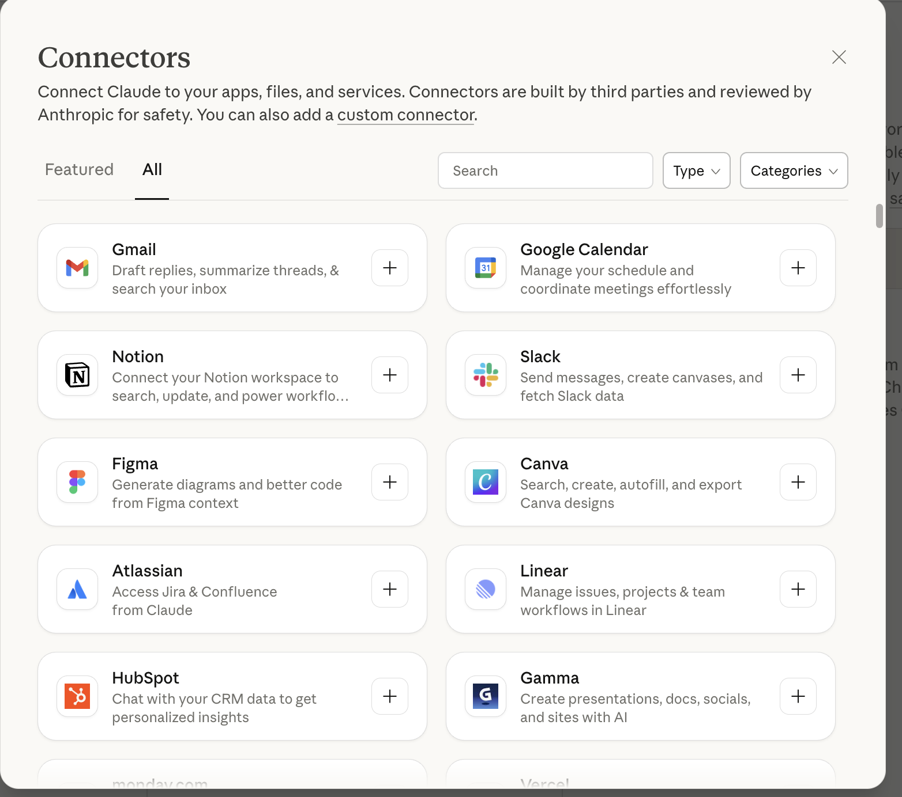
노션 연결을 클릭하였고, 이렇게 바로 Web url로 Notion에 접속하게 된다.
그냥 continue를 누르면 바로 연결 완료.
노션 연결을 확인해보자.
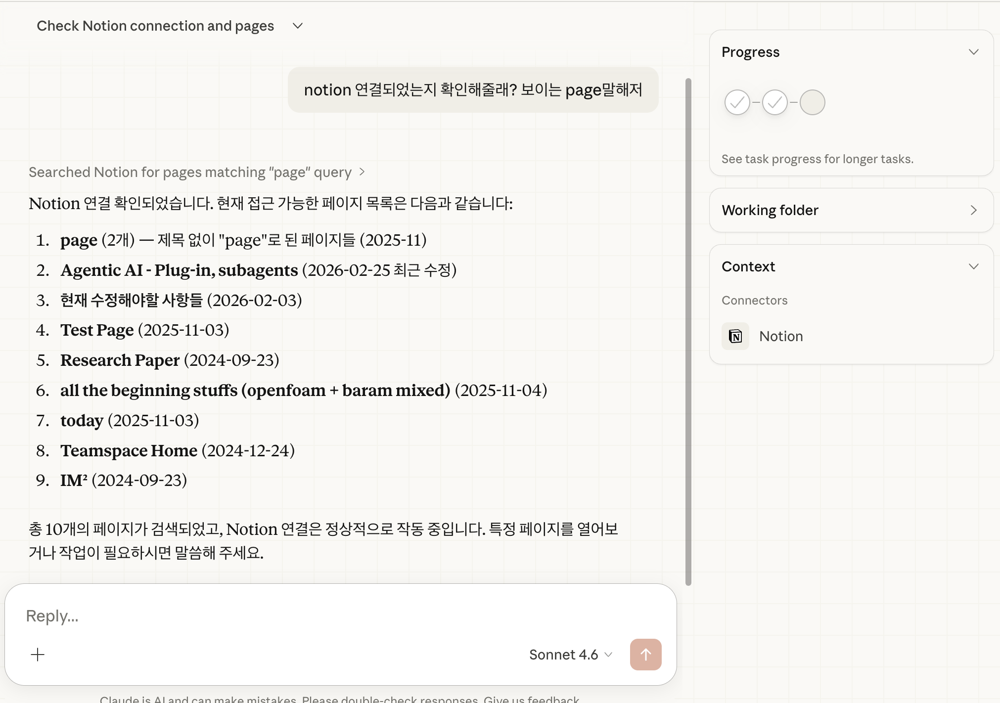
Manage Connectors에 들어가게 되면, 이렇게 도구 사용 접근 권한도 세밀하게 조절할수가 있다.
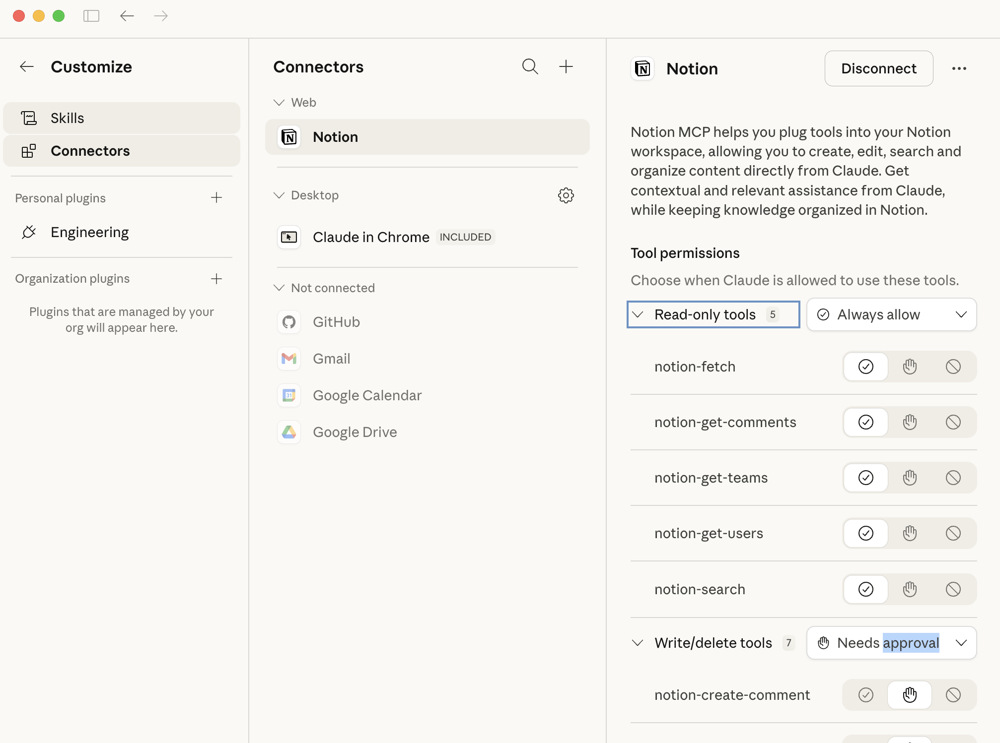
자세한 기능들은 추후에 Cowork post에서 다루어 보고, 결국 Desktop 모드는 복잡한 연결 호환 들을 UI로 아주 간편하게 만들어서, 엔트로픽의 고객층이 회사 전체 라는 것이 이해가 된다.
결제 방식은 두가지이다.
1. 정기결제(per month)
2. 토큰 사용당 결제 (API)
https://claude.com/pricing
정기결제를 진행하면 (e.g) $17 Pro plan을 구독하게 되면, 엔트로픽이 우리에게 ($17 값어치의 토큰 + alpha) 를 부여하는 것이다. 따라서, 해당 이상을 사용하면 제한이 뜨게 된다.
개인적인 생각으로는 Claude는 성능이 굉장히 좋지만, 그 만큼 토큰을 굉장히 많이 잡아 먹는다. 따라서, Claude Pro를 쓰시다보면 굉장히 빨리 토큰을 사용하여 제한이 걸리는 경험을 많이 하였다. 한번 Pro를 사용해보시고 적절히 바꾸시는게 좋을 듯하다.
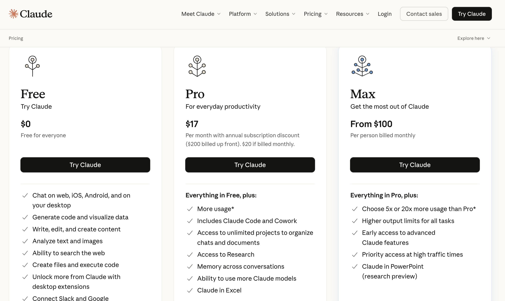
혹여나 유저가 매일 사용하지 않고, 부분적으로 필요할때만 사용할수도 있다. 그런 경우 $17 달러의 토큰이 필요가 없는 경우, 우리가 사용한 토큰에 비해서 결제하는 시스템이 존재한다. (단점은 CLI - terminal에서만 사용이 가능하다)
(Antropic, OpenAI, Google 전부 같은 시스템이다)
https://platform.claude.com/settings/keys
Claude Deeloper Platform → left sidebar → Manage → API keys → Create new key.
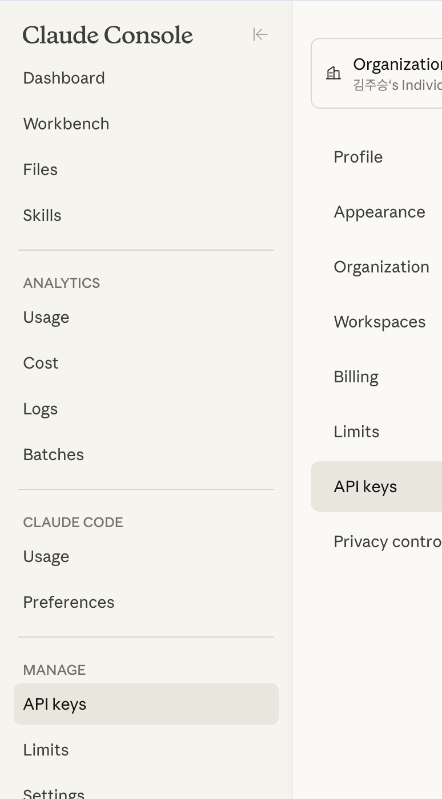
생성후, antropic 파일을 zshrc파일에 저장해주자. (영구 변수를 설정하는 것)
nano ~/.zshrc
export ANTHROPIC_API_KEY="sk-ant-xxxxxxx"
변수 설정이 잘 되었는지 확인하자.
echo $ANTHROPIC_API_KEY
→ 나의 key가 printout 되어야 함.
이후에 다시 CLI에서 claude를 치면, 이렇게 API key 인식했는데 쓸꺼야? 라고 물어본다.
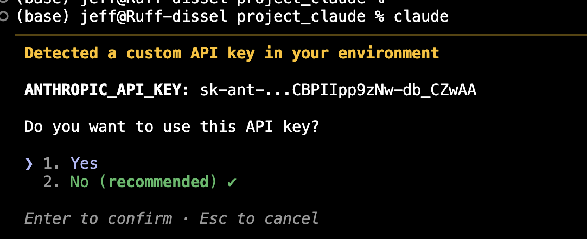
Cursor에서 보여주는 모델별 100만 토큰당 가격표이다.
https://cursor.com/docs/models
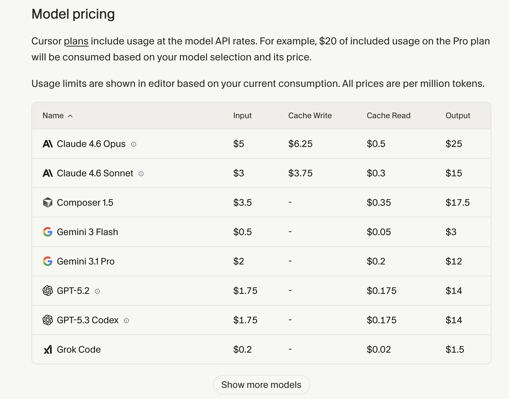
이번 글에서는 Claude가 제공하는 3개의 플랫폼과 각각의 작업 환경(Workspace)에 대해 살펴보았다.
Claude는 단순한 LLM이 아니라, 사용 목적에 따라 다른 실행 환경을 제공하는 멀티 플랫폼 AI 시스템이다.
특히 개인적으로 느낀 Claude의 가장 큰 차별점은 Claude Desktop에 있다.
Claude Desktop은 단순한 채팅 인터페이스를 넘어서:
- 외부 Application과의 Connector 기반 연결
- 파일 접근 및 관리
- 컴퓨터 수준의 작업 제어
- UI 기반의 도구 관리
등을 매우 직관적으로 제공한다.
현재 기준으로는 OpenAI의 Codex보다 외부 애플리케이션 연결성과 컴퓨터 통합 제어 측면에서 더 많은 기능을 지원하는 구조로 보인다.
Anthropic이 기업을 주요 고객층으로 설정한 전략이 이 Desktop 구조에서 명확히 드러난다.
그러나 단점도 분명하다.
마지막 가격 비교 표에서 확인했듯이, Claude 모델은 다른 모델들에 비해 토큰 비용이 상당히 높은 편이다.
이는 다음과 같은 의미를 가진다:
- ✅ 생산성을 극대화할 수 있는 강력한 모델
- ❌ 대규모 사용 시 비용 부담이 큼
즉, Claude는 “강력한 성능과 높은 생산성”을 제공하지만, 그만큼 비용 효율성 측면에서는 전략적인 사용이 필요하다.
결론적으로 Claude는 단순한 LLM이 아니라,
Enterprise 중심의 Agentic AI Platform으로 진화하고 있는 시스템이라고 볼 수 있다.